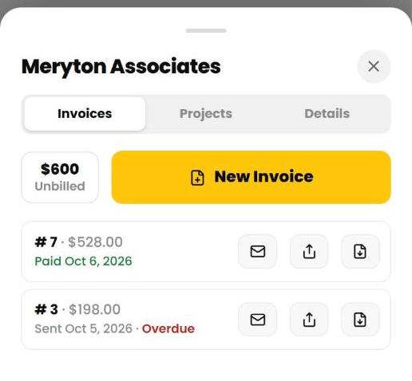

Invoices
Turn your unbilled time into a PDF invoice and send it from the app.
Create an invoice
- Tap Clients, then the client, then the Invoices tab.
- Tap New Invoice and choose the period: last month, this month or a custom range.
- Check the invoice number (we suggest the next one), the issue date and the payment terms.
- Set the tax rate, and add a discount or a note if you need to.
- Under Fees and expenses, untick any charge you want to leave off, or tap Add Charge.
- Tap Create Invoice.
The client needs an hourly rate above 0 to be invoiced. The Invoices tab also shows how much is unbilled.


What goes on an invoice
- Billable time in the period. Non-billable entries stay off, and so does time already on another invoice.
- Lines are grouped by project, task and rate. If a rounding setting applies, each line is rounded, not each entry.
- Tax applies to time and to any taxable charges. A discount comes off before tax.
- If the period has time in more than one currency, Cruxy asks you to invoice them separately.
An invoice is a snapshot. Later changes to the client, your settings or the entries don't change it. If you need a change, delete the invoice and create it again.
If the period has nothing to invoice, Cruxy says so and doesn't make an invoice.
View an invoice
Tap an invoice in the client's list to see Bill To, the lines, the totals, your payment instructions and notes. The status shows as Not sent, Sent, Overdue or Paid.

Email an invoice
- Open the invoice and tap the email icon.
- Check the To address. It comes from the client's billing email.
- Edit the subject and message if you like. A copy to yourself is on by default.
- Tap Send Invoice.
The invoice goes as a PDF attachment. Replies come to you. Emailing marks the invoice as sent.
Free includes 3 emailed invoices or reminders a month, renewing on the 1st. Pro has no monthly limit. See Free vs Pro.

Mark an invoice sent or paid
- Mark as Sent when you've sent it yourself.
- Mark as Paid when the money arrives. A message offers Undo in case you tapped it by mistake.
- Mark as Unpaid or Mark as Unsent reverses the status.
- Tap the underlined sent or paid date to change it.
An invoice is Overdue when it's been sent, isn't paid and is past its due date. An invoice due on receipt gets one business day before it counts as overdue.
Cruxy doesn't take payments from your clients. You get paid however your payment instructions say.
Send a reminder for an overdue invoice
Open an overdue invoice and tap the email icon. Switch to Reminder, check the message and tap Send Reminder. A manual reminder counts toward your free monthly emails.
Pro can send reminders automatically. See Automatic reminders to your clients.
Delete an invoice
Open the invoice and tap Delete. The time and charges on it count as unbilled again. This can't be undone, and there's no void. Deleting doesn't unsend an email your client already received.
Invoices can't be edited after they're created. To change one, delete it and make a new one.